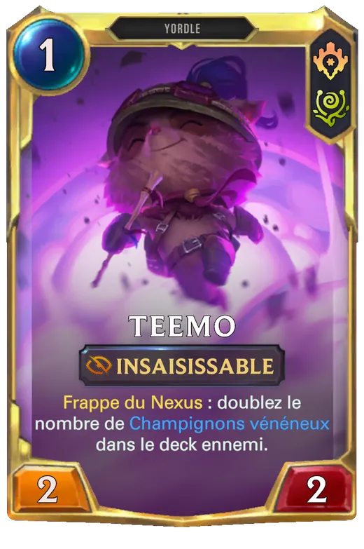
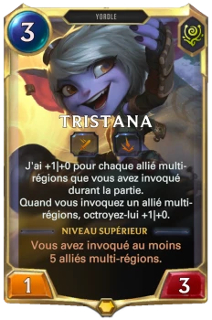
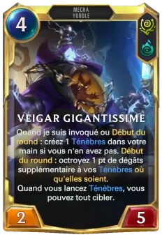

Découvrez des cartes à l'effigie des Yordles facétieux comme Teemo, Tristana et Veigar. Ces cartes sont souvent dotées de capacités imprévisibles, à l'image de leurs habitants
Teemo : Explorateur intrépide de Bandle et maître des embuscades, Teemo est un Yordle toujours prêt à défendre son territoire. Avec ses fléchettes empoisonnées et ses champignons piégés, il se déplace furtivement pour surprendre ses ennemis. Derrière son air mignon se cache un redoutable combattant... à éviter si possible
Tristana : Canonnier énergique et membre de l'escouade Mégaloup, Tristana est une Yordle passionnée par les combats explosifs. Avec son énorme canon, "Boomer", elle fait exploser ses ennemis tout en bondissant sur le champ de bataille avec un sourire téméraire. Rien ne l'arrête lorsqu’il s’agit de défendre Bandle
Veigar : Sorcier noir ambitieux et autoproclamé "Maître du Mal", Veigar aspire à dominer la magie noire. Bien que petit de taille, il possède un pouvoir destructeur redoutable, lançant des sorts sinistres avec des ambitions démesurées. Malgré ses efforts pour être un grand méchant, son côté Yordle rend son plan diabolique parfois... adorablement inefficace